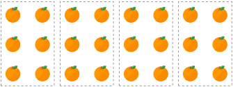
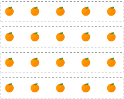
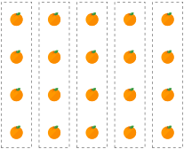
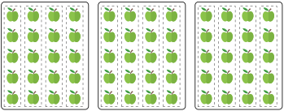
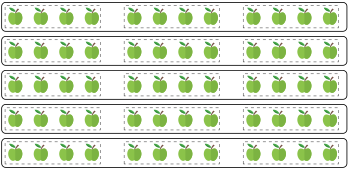
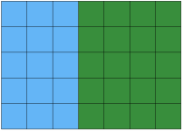
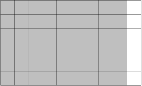

Objectives
-
Understand the definition of multiplication and the terms used.
-
Understand models used in multiplication.
-
Learn and use the properties of multiplication.
-
Understand and use the thinking strategies in multiplication.






